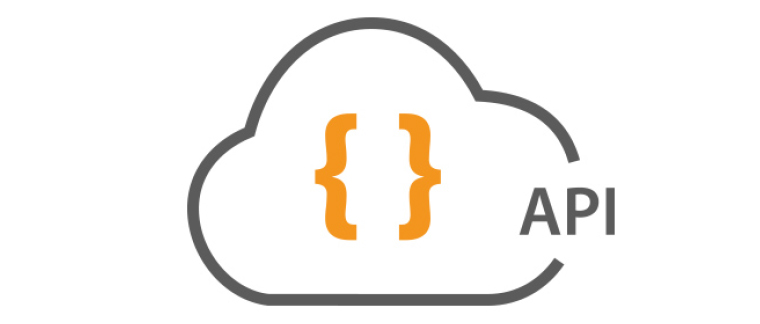
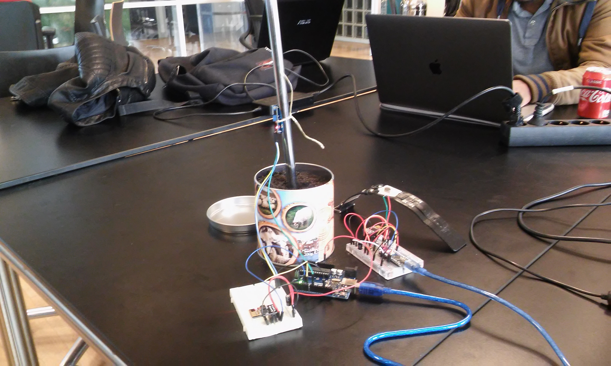

Portfoliowebsite voor klasgenoot
Voor een klasgenoot heb ik een portfoliowebsite ontwikkeld en een eigen CMS systeem gemaakt. Het is een
one page website, omdat de klant (klasgenoot) dit graag wilde. Door in te loggen kunnen er nieuwe
projecten worden toegevoegd in het
portfolio. De gegevens van de projecten worden opgeslagen in een database. Het is ook mogelijk om
projecten aan te passen en te verwijderen.
Vaardigheden: HTML, CSS en PHP/MySQL.
Spotify app
Voor een schoolproject heb ik samen met 2 klasgenoten een Spotify app gemaakt. De app heet "Instantmix".
Door middel van een "drag and drop" systeem wordt er in deze app een unieke playlist gemaakt. Uit elke
playlist die de user "dropt" worden er 5 willekeurige tracks gehaald. Deze 5 willekeurige tracks per
playlist worden geplaatst in een unieke playlist. Tevens is er de mogelijkheid om de nieuwe unieke
playlist op te slaan.
Vaardigheden: HTML, CSS, JavaScript, JSON en Spotify API.
Happy maps
Op de kaart van Google Maps worden markers geplaatst met foto's van Instagram. De locatie van de markers
komt overeen met de locatie van geplaatste foto's op Instagram. Door op de marker te klikken verschijnt
de foto. De meeste recente foto's met de hashtag 'happy' worden geplaatst op de kaart. Ik heb door deze
opdracht geleerd om met API's te werken.
Vaardigheden: HTML, CSS, jQuery, Google Maps API, Instagram API en JSON.
Boot- en tennisspelletje
Om object georiënteerd te leren programmeren heb ik 2 kleine spelletjes gemaakt in C# in het Monogame
framework. Bij
het eerste spelletje kan je tennissen. Door steeds te bal te raken kan je punten verzamelen. Bij het
missen van de bal gaan er punten vanaf. Bij het bootspelletje is het de bedoeling om de kistjes veilig
naar de "haven" te brengen. Daar wordt het goud gelost. Het schip mag echter niet tegen de boei en het
gevechtsschip aan botsen. Bij een botsing raakt het schip alles kwijt. Klik op het plaatje om beelden
en code van de games te bekijken. De code is ook op Github te zien, als je onderaan de website op
het Github icoontje klikt.
Vaardigheden: C#, Monogame en OOP

Youtube platform voor gamers
Met de API van Youtube heb ik een platform ontwikkeld waar gamers hun favoriete video's kunnen delen met
andere gamers. Gamers kunnen video's opzoeken en opslaan. Om de video's
op te slaan heb ik een kleine database ontwikkeld. De lijst met favoriete video's wordt gedeeld
via thumbnails. De laatste toegevoegde video in de database is te bekijken op de homepage. De lay-out
van de website is vormgegeven met de CSS extensie SASS. Om de code te bekijken kan je onderaan deze
webpagina
op het Github icoontje klikken.
Vaardigheden: HTML, CSS, SASS, JQuery, Youtube API, JSON en PHP/MySQL
Wedplek
Wedplek heb ik ontwikkeld om voetbal/sportliefhebbers de mogelijkheid te geven om tegen elkaar te kunnen
wedden. Geregistreerde leden kunnen weddenschappen plaatsen en reageren op weddenschappen van andere
leden. Door middel van een puntensysteem wordt bepaald wie de beste is. De weddenschappen gaan over
wedstrijden
uit de Eredivisie. Deze website was in 2015 ontwikkeld en meer bedoeld om te oefenen met PHP.
Tevens vind ik het leuk om in mijn vrije tijd te experimenteren met PHP. Om de code te bekijken kan
je onderaan deze webpagina op het Github icoontje klikken. Hier zie je ook enkele van mijn overige projecten.
Vaardigheden: HTML, CSS, PHP/MySQL
DMW Advies
Voor een klant heb ik een vernieuwde website gemaakt met Wordpress. De klant had al sinds 2005 een
website en die was erg verouderd. De website moest qua uitstraling op het visitekaartje lijken van de
klant. Het
is niet alleen belangrijk dat de website goed staat en af is, maar ook dat de klant zelf veranderingen
kan
doorvoeren, zoals andere plaatjes en teksten veranderen. De klant heb ik geleerd om met wordpress om te
gaan, zodat
de klant zelf bepaalde aanpassingen kan doen op de website. Qua beheer blijf ik logischerwijs actief om
de complexere aanpassingen/toevoegingen te regelen op de website. Klik op het plaatje om de website te
bezoeken.
Vaardigheden: Wordpress, CSS, en PHP

Restful webservice voetbalteams
Het leek mij leuk om een Restful webservice te ontwikkelen waarbij voetbalteams toegevoegd kunnen worden
over de hele wereld. Op deze manier leerde ik de standaarden van REST kennen. De volgende methods zijn
toegestaan: GET, POST, PUT, DELETE, HEAD en OPTIONS. Als je op het plaatje klikt kom je op de link
terecht
waarmee je in een Rest client zoals Postman in Chrome voetbalteams kan verkrijgen, toevoegen, aanpassen
of
verwijderen. De werking spreekt vrij voor zich door o.a. de standaard van Rest aan de houden en de
duidelijke
error/feedback meldingen bij verkeerd gebruik. Om de code te bekijken kan je onderaan deze webpagina op
het
Github icoontje klikken. Hier zie je ook enkele van mijn overige projecten.
Vaardigheden: REST, PHP/MySQL, JSON en Rewrite Rules
Recipe Finder
Recipe Finder is een webapp die ik heb gemaakt met de Backbone.js library. Deze library is gebaseerd op
het
MV (Model en View) principe. Verder heb ik ES6 gebruikt en met de JavaScript compiler Babel heb ik dit
omgezet
naar ES5, zodat het leesbaar is voor de browsers. Op de webapp kan je maximaal 4 ingrediënten intypen en
daaruit
verschijnen verschillende soorten recepten die komen uit de Recipe Puppy api en uit de Youtube api.
Om de code te bekijken kan je onderaan deze webpagina op
het
Github icoontje klikken. Hier zie je ook enkele van mijn overige projecten.
Vaardigheden: Backbone.js, ES6, Babel, Node.js, NPM

Slimme hardloopschoen (Prototype)
In mijn "jongere jaren" deed ik zelf aan hardlopen en het leek mij leuk om hier iets mee te doen met een
Arduino en sensoren gekoppeld aan een hardloopschoen. Ik heb een prototype van een hardloopschoen
ontwikkeld
die de drukpunten in de zool meet met druksensoren en op basis daarvan advies kan geven over de
loophouding
van een hardloper. Het advies wordt gegeven in een webapp. Ook wordt er advies gegeven om slijtage van
de
hardloopschoen tegen te gaan. Dit kan door middel van een DHT11 sensor die de temperatuur en
luchtvochtigheid
meet. De data van de sensoren wordt d.m.v. een ethernet module gestuurd naar de server en opgeslagen in
de
database. Aan de hand van deze data kan er advies gegeven worden. Het is een puur prototype. Voor een
echt robuust
product zal het netwerk draadloos moeten zijn en de arduino moeten worden vervangen door een kleinere
chip. Klik
op het plaatje om de Youtube beelden van het prototype te bekijken.
Vaardigheden: Arduino Uno, sensoren, jQuery, PHP/MySQL, C++, API, JSON

Goperience (Prototype)
Tijdens dit project heb ik kennis gemaakt met het MQTT protocol. Dit communicatieprotocol is speciaal
bedoeld voor "Internet of Things" en laat apparaten sneller communiceren met elkaar. Ik heb een
prototype
ontwikkeld waarbij het de bedoeling is dat een armbandje van een supporter gaat trillen wanneer de bal
tijdens
een voetbalwedstrijd op de paal of lat komt. Dit vergroot de beleving van de voetbalsupporters.
De code is te vinden op mijn Github page.
Vaardigheden: Arduino Uno/Nano, trillingssensor (SW-420), trillingsmotor
(ROB-08449),
WiFi module (ESP8266), C++, MQTT
Game voor dove en slechthorende kinderen
Voor dove en slechthorende kinderen heb ik een prototype gemaakt waarmee de gebruiker zijn
eigen stemvolume beter leert controleren. Het is een webapp en bespeelbaar in de browser. Dit prototype
heb ik gemaakt in TypeScript. Met TypeScript kan je object georiënteerd programmeren door JavaScript
code te schrijven. Het lijkt erg op C#. De code is te vinden op mijn Github page. Klik
op het plaatje om de Youtube beelden van het prototype te bekijken.
Vaardigheden: HTML, JavaScript, TypeScript, p5.js, CSS
CryptoSpace
Cryptocurrencies is booming! CryptoSpace is een app waarin je de laatste koers kan zien van de top 10
grootste crypto munten. De basis voor de app staat en momenteel ben ik het aan het uitbreiden met
meerdere functionaliteiten. Tevens maak ik de lay-out strakker. Mocht je al nieuwsgierig zijn, kan je op
het plaatje klikken om het Youtube filmpje over CryptoSpace te bekijken. Hierin geef ik uitleg over de
(technische) werking van de app.
Vaardigheden: Java, Android framework, API